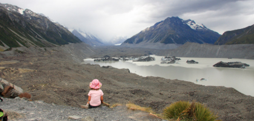
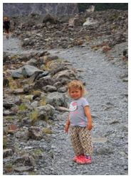

Mount Cook - Tasman gletcheren

En tur på månen
mandag den 21. januar 2008

Vi er kørt de sidste 25 km op til selve Mount Cook by. Vi er taget herop for at gå et par ture i det meget golde landskab. Den ene tur fører til Lake Tasman, som skulle være fuld af isbjerge, på trods af at her er 27 grader varmt. Den anden tur fører op til et udsigtspunkt, hvor man kan se den kæmpestore Tasman Gletcher.

Vi er ikke helt flade endnu, så da vi kommer tilbage til skillevejen, går Viola og jeg op til toppen for at se gletcheren, mens Camilla og Stella går tilbage til bilen for at bade i en smeltevandsflod. Det viser sig at være en ret barsk opstigning, men Viola klarer det flot. Vi får set søen igen og gletcheren med, inden vi vandrer ned igen.
Sir Edmund Hillary, har et museum i byen, og vi tager ind for at se det samt det berømte Hermitage Hotel. men vi er for sent på den, og ender med aftensmad på “The Old Mountaneer Café”. Sir Hillary skal begraves i morgen, og byen er i sorg. Diverse TV stationer har slået deres satellit vogne op i byen for at transmittere fra den store mindehøjtidelighed, der skal være her i morgen. Alle vegne er der billeder og minder fra hans storhedstid som bjergklatrer.
Vi er godt flade, da vi lander tilbage på campingpladsen, mens solen går ned over bjergene. Det har været en fin dag!
Viola puster ud, efter at have kravlet hele vejen op til udsigtspunktet. Og udsigten er ret storslået: en sø fuld af isbjerge og verdens største gletcher i baggrunden.